Guides
Guides explain in practical terms how we do stuff. Any Hypha member can change these.1
We are inspired by the idea of "protocols" from the Lab Book of the Civic Laboratory for Environmental Action Research (CLEAR)
Protocols are the "attitudes" or "the manner in which one approaches each and every element in our space." They are different than pure rules or instructions; they are ways that we establish order and maintain practices across our group [...] -- They define the way we ought to proceed or behave in different situations. As such, they are normative, or premised on values, morals, and an idea of how things ought to be done. They are a manifestation of our values.
Contents
- Expense Reimbursement
- Invoices
- Issue Labels
- Meetings
- Onboarding Checklist
- Payroll
- Projects
- Sensitive Data
- Signatures
- Shortlinks
- Timesheets
- Voicemail
- References
Creating new inboxes (Administrators)
What you'll need:
- Admin access to our Mailcow email server
- The following user info (from https://link.hypha.coop/employees):
- preferred email handle e.g.,
handle@hypha.coop(under "@hypha.coop" column) - preferred public name (under "Public Name")
- email they'd like
@hypha.coopforwarded to (under "Primary Email") - Signal-friendly phone number (under "Signal Phone" or "Phone")
- preferred email handle e.g.,
Note: Consider creating a new GitHub issue in hyphacoop/organizing to track email onboarding.
- Sign into Mailcow: https://link.hypha.coop/email
View Screenshot 🔎
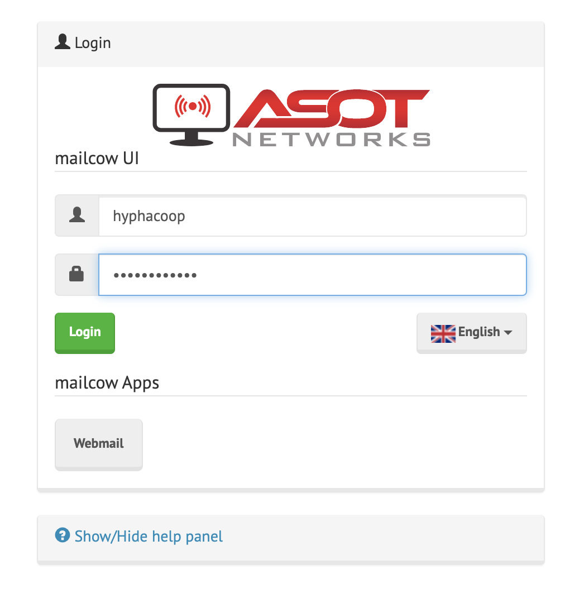 - Navigate to "Mailboxes" tab
- Click "+Add mailbox" button at top-right of screen
- If the namespace is already taken by an alias, ensure it's not in use before deleting it.
View Screenshot 🔎
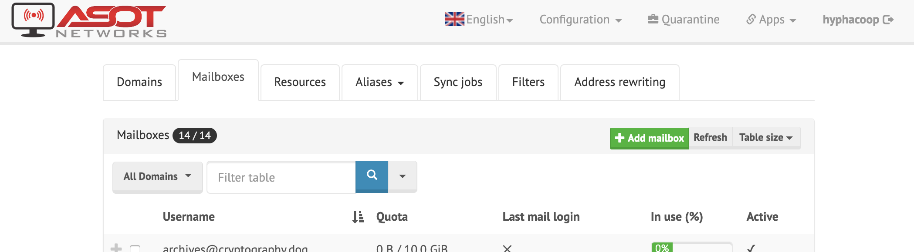
- If the namespace is already taken by an alias, ensure it's not in use before deleting it.
- Fill out the following fields, noting the password:
- Username:
[use preferred email handle] - Domain:
hypha.coop - Full name:
[use preferred public name] - Quota:
4096 - Password:
[auto-generated] - Active:
checked☑View Screenshot 🔎
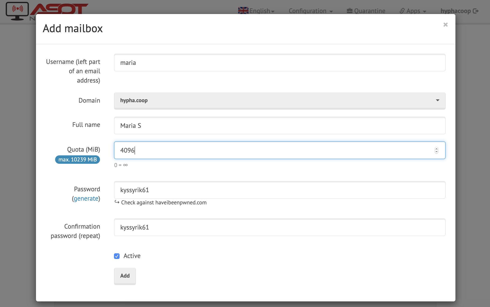
- Username:
We'll now log in to confirm access, and set up an initial forwarder to make first-time usage simpler.
- Open an incognito browser and access webmail login: https://mailninja.aseriesoftubez.com/SOGo/
- Log into the account you just created.
View Screenshot 🔎
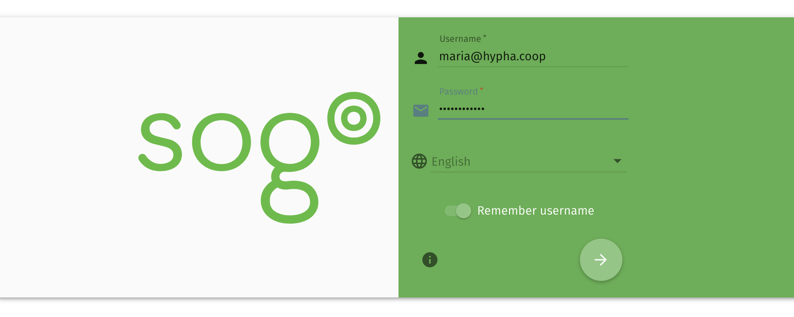 - Navigate through these menus:
⚙(top-left) >Mailmenu item >Forwardtab - Check "Forward incoming mail" and enter provided primary email, clicking "Keep a copy".
View Screenshot 🔎
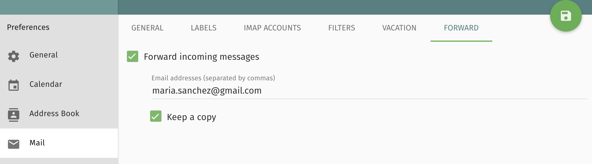 - From your own
@hypha.coopemail, send a welcome email, like this template:Hi XXXX --
Yay! Your Hypha email's set up and forwarding to your personal inbox. People can start emailing you at this address immediately, without any extra effort on your part.
Your new email (and login): XXX@hypha.coop
Your password: Sent via Signal to XXX-XXX-XXXXHaving said that, when you'd like to start sending email as XXX@hypha.coop, you'll need to take some more steps.
The next steps will depend on how you like to handle email:
- If you'd like to use it from your existing Gmail account...
- If you'd like to use it from our hosted webmail interface...
- If you'd like to use it from another email client...
Once you're set up, let us know by sending a test email to infra@hypha.coop, ideally with a short emoji-only story. (Keypad mashes a-ok!) We'll send a friendly poke in a week if we haven't heard back.
Questions? Feedback? Reach out via infra@hypha.coop or
#hyphacoop-infra:tomesh.netfor chat.In Solidarity,
xxxxx - Send a Signal message with the previously noted password, for example:
🍄 hypha email password: xxxxxxxx
Using your new inbox (Users)
Accessing your inbox can be done via the hosted webmail interface or by using the same email client you're already using.
What you'll need:
- Your new email address
- Your password (sent to you by admin on initial setup)
Using Gmail
- Log into Gmail
- Go to Gmail settings, by navigating through these menus:
⚙(top-left) >Settingsmenu item >Accounts and Importtab - Under "Send mail as", click "Add another email address".
View Screenshot 🔎

- In the new popup, enter:
- Name: e.g.,
Maria S(as will appear to email recipients) - Email address: e.g.,
maria@hypha.coop - Treat as alias:
checked☑View Screenshot 🔎

- Name: e.g.,
- Click "Next", then:
- SMTP Server:
mailninja.aseriesoftubez.com(auto-filled) - Port:
587(auto-filled) - Username: e.g.,
maria@hypha.coop(ignore auto-filled) - Password:
[your password] - TLS:
checked☑View Screenshot 🔎

- SMTP Server:
- Click "Add Account".
We'll now send your first email to Mailinator, a cloud inbox that's helpful for email testing. Then you can confirm for yourself whether it works.
- Back in your Gmail inbox, click "Compose" to create a new email message.
- Click the "From" address, and select your new email address from the drop-down.
View Screenshot 🔎

- Enter hyphacoop@mailinator.com as the "To" address, add a short subject and message, and hit send!
- Visit the corresponding cloud inbox and confirm your message has arrived, it might take a few minutes.
View Screenshot 🔎

- Once it's safely arrived, you're all set! Start sending email!
- Don't forget to email Infra WG as mentioned in onboarding email. 📤🎉
Using the webmail interface
- Visit our email server: https://link.hypha.coop/email
- Click on
Webmailbutton. - Enter your username and password:
- Username is your
@hypha.coopemail
- Username is your
- Once logged in you can read your emails and configure your user settings.
- By default your emails are forwarded to your personal email to disable that follow step 1 in
Using your existing email client.
Using your existing email client
These docs are condensed from Mailcow's in-depth email client configuration docs. (Substitute your info for that of "Maria Sanchez").
- By default emails to your
@hypha.coopare forwarded to your personal email address if prefered that you want to turn off forwarding of your@hypha.coopemail, log in to webmail (instructions above)- Navigate through these menus:
⚙(top-left) >Mailmenu item >Forwardtab
- Navigate through these menus:
- Uncheck the "Forward incoming messages", and save.
- Open your email client.
- Go to the "add email account" setting in your client.
- Enter your name that you prefer that will show up in your outgoing emails and email address when prompted.
- When prompted for username and password use your new email address e.g.,
handle@hypha.coopfor username and your password for your new email. - Most email clients will auto-detect server settings based on your email address. If your email client does not auto-detect these settings, enter:
- IMAP:
mailninja.aseriesoftubez.comPort: 993 (TLS/SSL) - SMTP:
mailninja.aseriesoftubez.comPort: 465 (TLS/SSL)
- IMAP:
- Once added, you should now be able to send from your new email. In your email client, compose an email to hyphacoop@mailinator.com with a short subject and send.
- Visit the corresponding cloud inbox and confirm your message has arrived, It might take a few minutes.
- Don’t forget to email Infra WG as mentioned in onboarding email.
Expense Reimbursement
Employees should submit eligible expenses in the same quarter they are incurred. The Finance WG reviews submitted expenses before each pay period, and pays out reimbursement amounts on the next pay day.
Submitting an expense
Upload the expense receipt to Employee Expense Receipts with file name
xx-YYYY-MM-DD-title.extwherexxis the initials of the member,titledescribes the expense, andextis the file extension, then make note of the URL.Open the Expense Reimbursement sheet and fill in a new row according to instructions in the sheet.
- Date of Expense:
[date on your receipt] - Employee:
[employee to reimburse] - Description of Expense:
[short description of what the expense is for] - Total Amount:
[total receipt amount, including HST] - HST Amount:
[total HST on the receipt] - Currency:
[currency of the receipt](default toCAD) - Exchange Rate:
[currency exchange rate to CAD](default to1.000for CAD, you can use the rate on your credit card statement or Bank of Canada rate on the receipt date) - Receipt Link:
[link to uploaded receipt]
- Date of Expense:
That's it. Once finance approves the expense it will show up beside your name on the Employee Payroll sheet and you will be reimbursed in that pay period. The amount will not appear on your tax forms.
Approving an expense for reimbursement
For the Finance WG to approve an expense:
Verify all expenses that do not have a
Pay Period of Reimbursementselected.Select a
Cost Center / ProjectandPay Period of Reimbursement.Verify that the
Total Amount (CAD)is added to the Reimbursement Summary sheet to the correctPay Period of ReimbursementandEmployee.Verify that the amount shows up correctly on the
Expense Reimbursementcolumn on Employee Payroll of the applicable pay period, so it gets entered into Wagepoint on the next payroll run.🚧 Track the expense appropriately in Quickbooks Online.
Invoices
Prior to creating an invoice, confirm with the client whether they would like to pay in CAD, USD, EUR, or GBP, and in what country their financial institution is based, then proceed with the following steps.
Creating an invoice for a client
Go to Quickbooks Online, open the
Invoicing > Customerstab.If the client is not in the customer list, click
New customerto create a new profile for the client.Click
Create invoiceon the client you wish to invoice, and use the following settings:- Cc.:
finance@hypha.coop - Terms:
Net 15(may vary by project) - Message on invoice:
[Payment instructions](e.g. Please pay USD 3,135.00) - Attachments:
[Timesheet PDFs]
- Cc.:
At the bottom of the page, click
Customizeto select a style, or create a new style template as needed.If creating a new style template or the payment information needs to be changed, select the
Contenttab, click on the bottom section of the template preview to reveal theAdd payment details and footersection, then enter the applicable payment information.For example:
PAYMENT By ACH or domestic wire transfer to: ACH Transfer No. (ABA): 026073150 Wire Transfer No. (ABA): 026073008 Account No.: [REDACTED] Beneficiary Name: Hypha Worker Co-operative Inc. Beneficiary Address: TransferWise 19 W 24th Street New York 10010 United States Invoice amount will be adjusted to reflect actual exchange rate after payment.This is an invoice for a client based in the United States, payable in USD to our TransferWise account. Look at a previous invoice for examples.
Review the invoice preview, then click
Done.Fill in the line items and calculate totals. See example below.
All invoices are in CAD, even if the customer is paying in a foreign currency. This means
RATEandAMOUNTcolumns are in CAD, and if the contract is an hourly rate based on a foreign currency, you can include the information in theDESCRIPTIONcolumn, and use an estimated CAD equivalent in theRATEcolumn and to calculate theAMOUNT.Create a
Subtotalline item. See example below.Add a line item for Canadian HST, and if it is not applicable, indicate the reason in the line item
DESCRIPTION. See example below.Review the invoice preview, then click
Save and sendto email the invoice to the client.
| DESCRIPTION | QTY | RATE | AMOUNT |
|---|---|---|---|
| Software development for Jan 2020 (52.25 @ USD 60.00 = 3,135.00) |
52.25 | 80.00 | 4,180.00 |
| Software development for Feb 2020 (20.00 @ USD 60.00 = 1,200.00) |
20.00 | 80.00 | 1,600.00 |
| Subtotal: 5,780.00 | |||
| HST @ 0% Intellectual property exports, zero-rated |
5,780.00 | 0 | 0.00 |
Settling an invoice payment
Once the client has paid the invoice, we must check the amount received at our receiving account at Desjardins (domestic) or TransferWise (foreign currency), and record the transaction in Quickbooks Online.
Domestic
After the money arrives to Desjardins, we need to update our records in Quickbooks Online:
In the
Bankingtab, select ourChequingaccount and clickUpdateto sync our Desjardins account.Find the transaction from the client and click on it, then select
Find matchto select the incoming transaction to match.If there is a discrepancy in the amounts, click the
Resolvebutton and changeCATEGORYtoBank charges, then clickSave.
Archive the PDF of the paid and finalized invoice in our shared drive under the
Invoicesdirectory with filenamexxxx-project.pdf, wherexxxxis the invoice number (e.g.1001-aether.pdf).
Foreign Currency
Confirm the correct amount is received, then convert the foreign currency to CAD. We can either move the money to the CAD balance in TransferWise, or if the amount is large, we can directly deposit the exchanged amount into our Desjardins account. The following example shows how to do that in a single transaction from TransferWise:
Confirm that the invoice amount of
3,757.50 USDis received to our USD balance, then clickSend USD.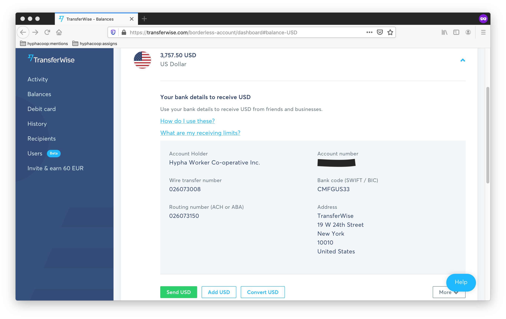
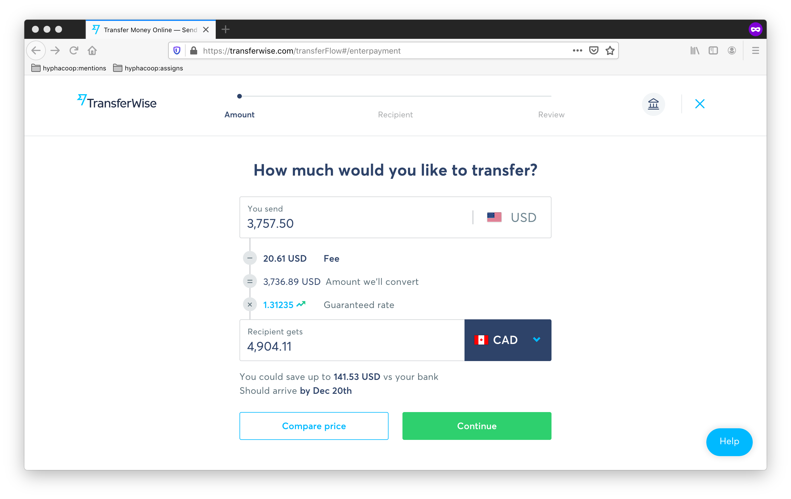
Choose
My businessand enter in our Desjardins account information for the deposit.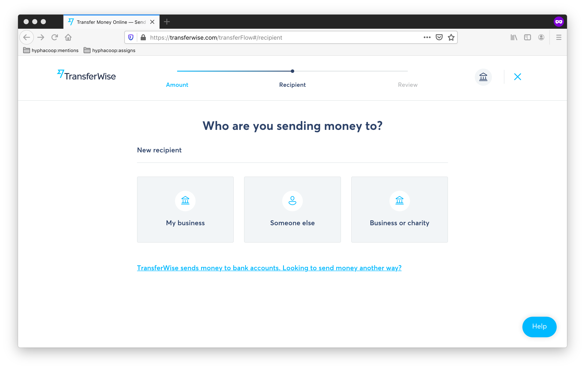
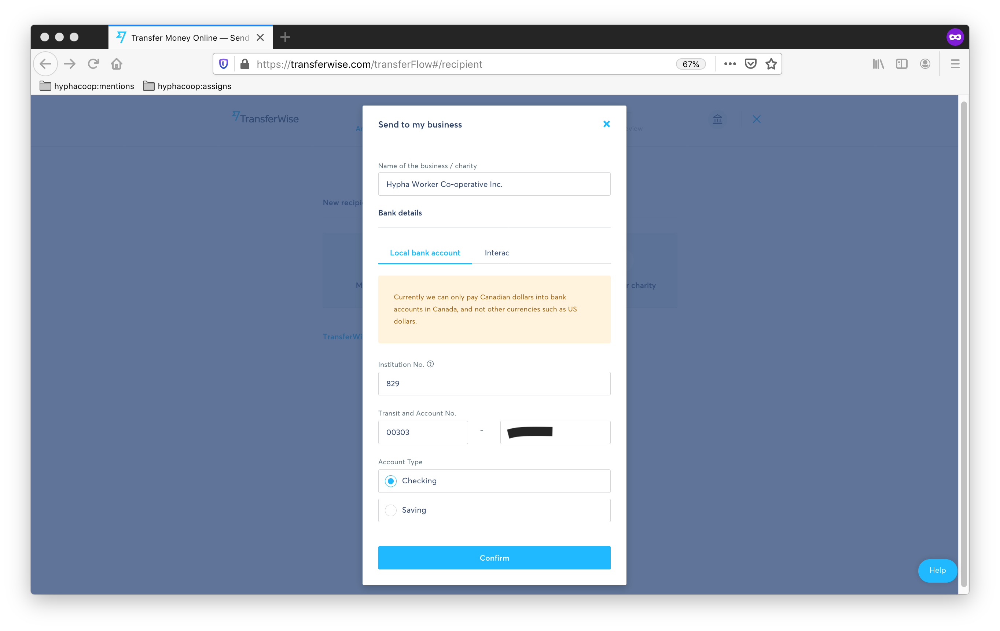
Note the invoice number in the
Referencefield, then clickConfirm and send.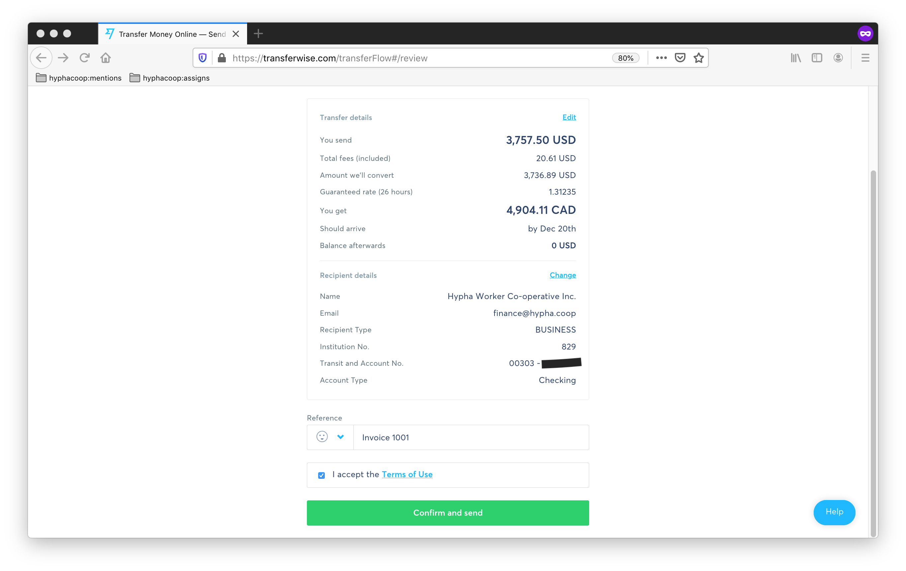
In this example, a client in the United States sent 3,757.50 USD to the Hypha USD account at TransferWise, and we deposited 4,904.11 CAD at the Hypha CAD account at Desjardins. The transaction and exchange fee was 20.61 USD, and the exchange rate was 1.31235.
If invoice amounts are small, we may batch many of them in TransferWise before depositing to Desjardins, but we should still convert foreign currencies to CAD as soon as possible and hold the amount as CAD in our TransferWise CAD balance.
In the USD balance, click on
Download a statementand download a CSV file for the date range that includes the transaction(s). Open the file and multiply the amounts with the exchange rate column, then save.
After the money arrives to Desjardins, we need to update our records in Quickbooks Online:
Click on the invoice and add a line item that accommodates for the discrepancy in estimated and actual exchange rates.
In our example where we deposited 4,904.11 CAD to Desjardins, if our invoice estimated a CAD
AMOUNTof 4,950.00 CAD, we would record anExchange rate adjustment @ 1.31235line item with-45.89asAMOUNT. Make sure you take the exchange rate from the TransferWise CSV.In the
Bankingtab, select ourChequingaccount and clickUpdateto sync our Desjardins account. Find the transaction from TransferWise and click on it, then change theCategorytoTransferWiseand clickAdd.In the
Bankingtab, select ourTransferWiseaccount to clickFile upload(down arrow next toUpdate) to update our TransferWise account.Browseand upload the TransferWise CSV we saved earlier, selectTransferWiseas the account, then clickNextand enter the following:- Date:
Column 2 - Description:
Column 5 - Amount:
Column 3
Click
Nexttwice, and thenYesto import.- Date:
Find the transaction from the client and click on it, then select
Find matchto select the incoming transaction to match. There should be no discrepancy in the amounts.Find the transaction from our TransferWise account to Desjardins account, then select
Find match. We expect a discrepancy in the amounts. Click theResolvebutton and changeCATEGORYtoBank charges, then clickSave.If there is a discrepancy, click the
Resolvebutton and changeCATEGORYtoBank charges, then clickSave.
Archive the PDF of the paid and finalized invoice in our shared drive under the
Invoicesdirectory with filenamexxxx-project.pdf, wherexxxxis the invoice number (e.g.1001-aether.pdf).
Issue Labels
We have specific GitHub repos (known as synced repos throughout this guide) configured to mirror all labels from the root hyphacoop/organizing,
on each change to the root repo's labels.
Though some of the below steps are more complicated than we'd ideally like,
this is because the automation is cautious and won't delete any in-use labels (regardless of open/closed state),
so nothing destructive will happen.
To manage the list of synced repos (e.g., ensuring a new repo starts having labels synced),
add a new entry to LABEL_REPO_TARGETS in this configuration file and ensure @hyphacoop-bot has write-access to each synced repo.
To create a new label, just add it to the hyphacoop/organizing repo,
and it will be added to others within a few minutes.
(Sync events are logged in this issue as new comments for troubleshooting.)
To delete an existing label, search for the label you'd like to delete,
like so.
Our automation is cautious, and so will only delete labels from repos where it's NOT in use.
For any repos represented in the search results, delete the label from that repo.
Once no labelled issues show up, delete the label from hyphacoop/organizing,
and anything else will be cleaned up. If you leave any issues labelled,
the automation will simply do cleanup on its next run.
As soon as a label is unused in a repo, the automation will remove it on the next run.
To rename an existing label (this one's a bit tricky),
search for the label you'd like to rename,
like so.
Ignore hyphacoop/organizing for now, we'll save it for last.
For every other repo where it's used, click the "repo" link,
and visit the label page to manually rename.
Lastly, rename the label in hyphacoop/organizing,
and it will ensure the label is removed in any repos where it wasn't in-use.
(Renaming is understood by the automation as a newly created label and a deleted label.)
To force a label sync, assuming you're impatient for it to do clean-up of unsued labels,
slightly change a description or color of a label in hyphacoop/organizing.
Meetings
Scheduling a meeting
Note: Consider whether this meeting might be a global interest to other members. Skip the steps below at your discretion for low-stakes topics.
- Try to announce your intention to schedule a meeting on a topic and ask who's interested in participating. Allow at least 48 hours for people to respond.
- Consider who might be most interested and what timing might work for
them.
- Check the
availabilitycalendar for travel/vacation plans. - Check everyone's availability
schedules.
- Check the
- If 2-3 candidate timeslots feel obvious from looking at people's
availabilities:
- Reserve them all in Hypha calendar immediately, for example:
HOLD: Infrastructure Meeting (Option 1) - Ask in chat whether anyone who wants to attend has any blocks on any of the options
- Reserve them all in Hypha calendar immediately, for example:
- If short-notice or speed of booking is important:
- Claim an open HOLD :information_source: slot.
- If time permits or topic isn't an all-hands matter, consider leaving the hold available for someone else
- If claiming a hold, edit the calendar immediately and announce meeting in chat
- Claim an open HOLD :information_source: slot.
- If your must find a new timeslot:
- Create a new poll (we currently use When2Meet)
- Leave ample time for completion (ideally 1 week)
- Check on non-responders in following days and send (gentle) reminders as needed
Hosting a meeting
- Before the meeting...
- create a stub agenda as soon as possible (can be done before scheduling)
- Hint: use an agenda
template
- Hint: use an agenda
- add the agenda to the
meetingsindex - update the organizational calendar as early as possible with candidate and finalized time slots progresses
- mention the meeting time in chat, and link the agenda.
- encourage migration of related actions, decisions and discussions into agenda from chat
- create a stub agenda as soon as possible (can be done before scheduling)
- During the meeting...
- ask for agenda items (start of meeting)
- facilitate discussion
- keep time
- call attention to action items, upcoming decisions and discussions
- After the meeting...
- add important dates/reminders to calendar
- review and merge notes
- update meeting index as best location changes (hackmd => review (PR) => file)
- as needed, set up loomio threads and decisions
- as needed, send reminders of action items
- migrate action items into task tracker
Joining a Jitsi Call
💻 Desktop. Follow link.hypha.coop/calls to our default conference platform.
📱 Mobile
- Install the app. Android | iOS
- 🔗 Visit call URL to open app, or 📋 copy-paste redirected call URL (e.g.
https://jitsi.hypha.coop/hyphacoop) into app home screen.
📞 Phone
- Use the private dial-in number from our technical Jitsi documentation.
- After prompt, enter conference code
307 314 3734 #
Onboarding Checklist
This is a checklist for onboarding a new Member to the Co-operative 🚀
Setting up communications
Get Signal number and add to group.
Get Matrix account and invite to spaces:
- Private chat
#hyphacoop-private:tomesh.net - Public chat
#hyphacoop-open:tomesh.net - Community
+hyphacoop:tomesh.net
- Private chat
Set up
hypha.coopemail:- Create new mailbox with Mailcow
- Set up initial forwarder
- Add to
members@
Setting up virtual office
Invite to Passbolt:
- After acceptance, add to
Member-Workergroup
- After acceptance, add to
Invite to GitHub Organization:
- Add to
Worker-OwnerGitHub Team
- Add to
Get Google-friendly email address:
- Share access to Drive
- Invite to calendars:
Invite to Loomio.
Share weekly schedule (recommend without password).
Setting up employee record and payroll
Collect information for employee record.
Add Member SIN to Passbolt and share access with
People Operationsgroup. Change the Member access to the entry as read-only, as this information is for recording keeping and the Member should not be able to modify it.Collect encrypted (see Sensitive Data guide)
TD1andTD1-ONforms to Drive.Add Member as Employee in Wagepoint for payroll.
Payroll
This guide describes how to use our payroll service provider, Wagepoint, to set up a payroll run for the pay period. You should have a completed Employee Payroll sheet for the pay period ready, which indicates the wage information for each Employee that you will need to enter into Wagepoint.
If this is the first time you use Wagepoint, please first review the Running your first payroll with Wagepoint - Canadavideo.
Running payroll
Log into Wagepoint as a user with admin privileges.
Visit the
PAYROLLtab.Paygroup: Hit
NEXTsince we only have one monthly paygroup.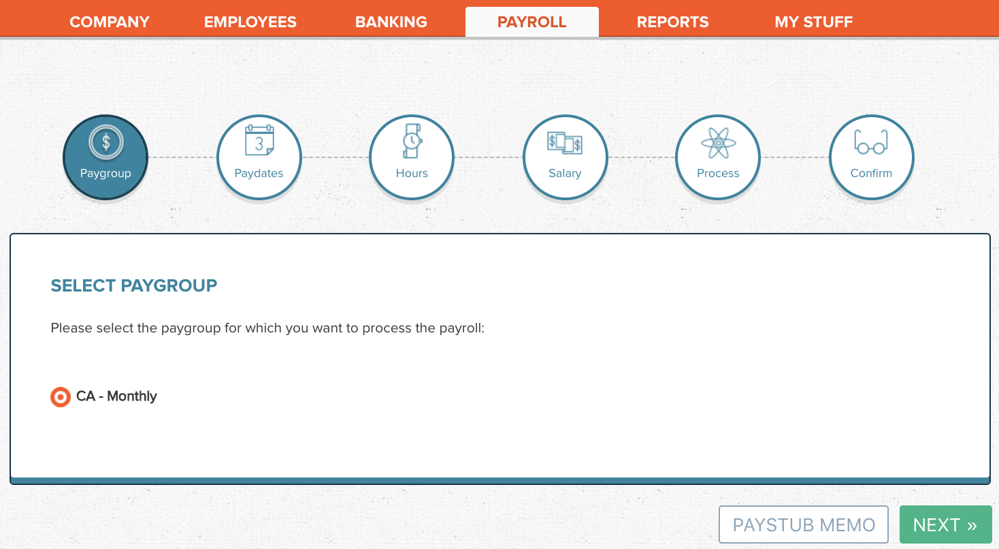
Paydates: Set the pay cycle to cover the current month (e.g., March 1-31) and the
Pay Dateto be the 15th of the current month (e.g., March 15) or the last working day prior if the 15th happens to land on a holiday (e.g., March 13). During that period, we settle amounts owed up to the end of the previous month (e.g., Feb 29).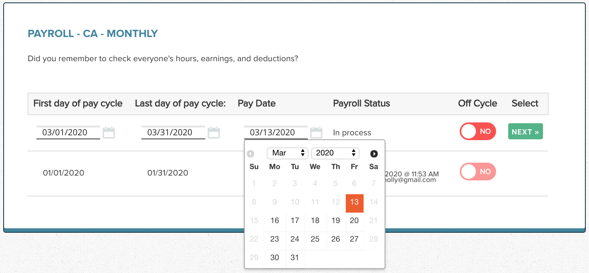
Set the dates as per the above, and hit
NEXT. Nothing is finalized until the last step, and you must hitSAVE/NEXTduring each step to preserve "draft" progress.Hours: Hit
SAVE/NEXTto skip since we currently do not use theHourlypay type.Salary: Enter
HOURS,CURRENT PAY,EXPENSE REIMBURSEMENT, andPUBLIC HOLIDAY PAYaccording to the Employee Payroll sheet for the pay period. Ensure that hours and pay line up, as these are the basis for ensuring legal minimum wage.The
VACATION HRSfor everyone is0due to our variable work hours and that annualized amounts will be paid out each pay period.In the
PAY?column, selectYESfor any Employee who will be paid in this payroll.You can review past payrolls under the
REPORTStab.Process: Verify the amounts. Save the PDF output of
VIEW ALL, our "Payroll Register", into the 🔒Finance > Payrollfolder in our Drive. ClickAPPROVE PAYROLL.Confirm: Confirm the payroll run for this pay period. It will be queued for processing on the
Pay Date.No further steps necessary. Wagepoint will withdraw funds from our bank account, and this will sync with our Quickbooks automatically. Our bookkeeper will see our Payroll Register in the Drive and update Quickbooks for us once per month.
Adding a new employee
Log into Wagepoint as a user with admin privileges.
Click the
EMPLOYEEStab and then theADD NEW EMPLOYEEbutton at the bottom right corner.Add stub details for new employee. Since we calculate wages per pay period outside of Wagepoint, set:
- Pay Type:
Yearly Pay Rate:
0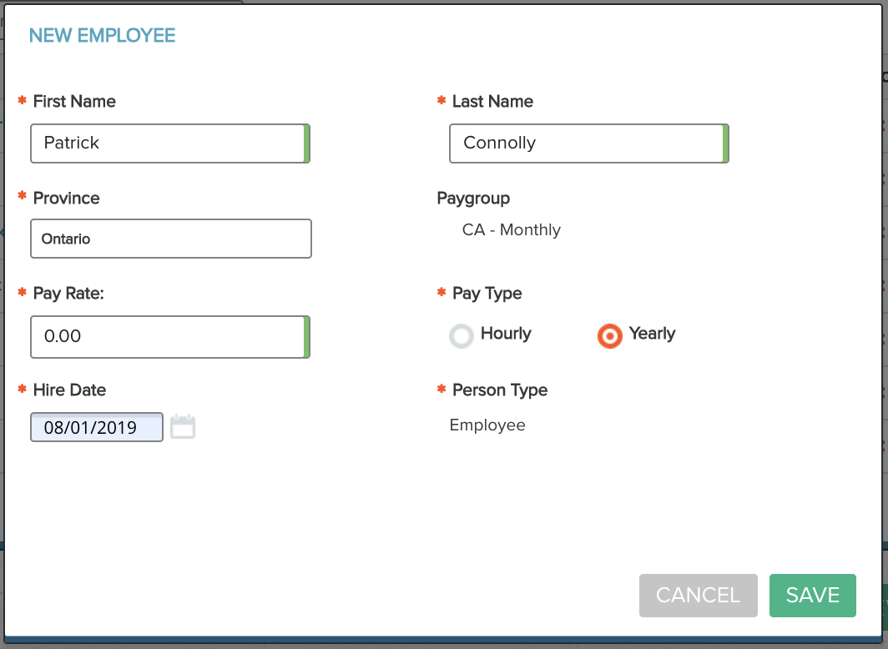
- Pay Type:
Return to the
EMPLOYEEStab and click the Employee's name. You should now be on their profile, specificallyTHE PERSONtab, which you can fill out with info from our employee records.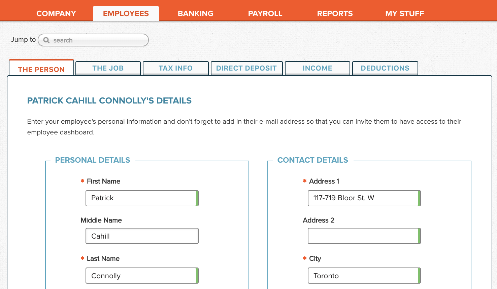
Fill out everything you can, but leave
External IDblank.In the
THE JOBtab, set up the Employee with the salaried method:- Pay Type:
Yearly - Annual Salary:
$0.00 - Expected Hour per Week:
0.00 - Job Title:
No title - Department:
Salary Vacation will:
be paid out each pay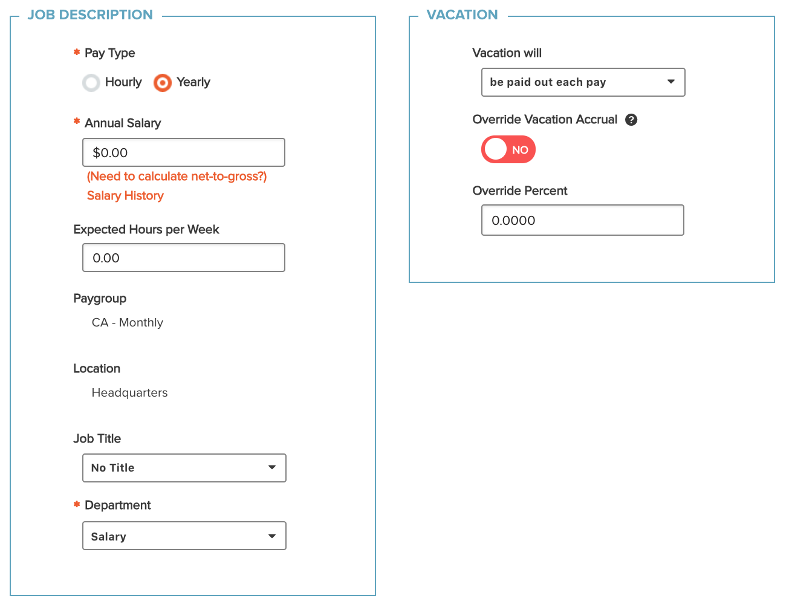
- Pay Type:
In the
TAX INFOtab, set up the Employee's tax info based on theTD1andTD1-ONforms they submitted. For example: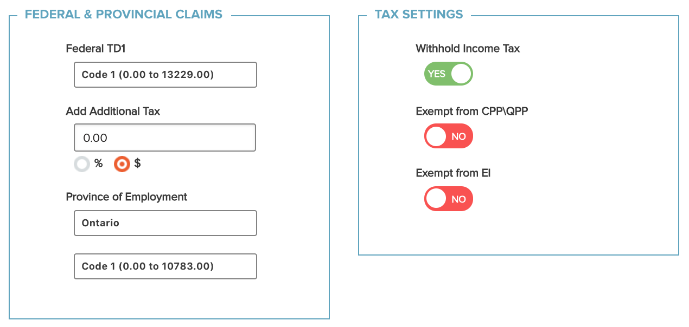
In the
DIRECT DEPOSITtab, set up the bank account for direct deposit based on account information or a void cheque they submitted.Return to the "Employee" tab listing, and use the "mail" icon to send an invite to the Employee to Wagepoint.
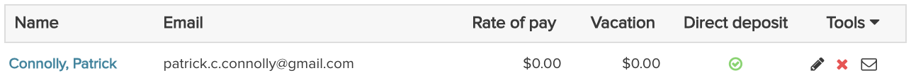
Projects
Sales Prospect & Internal Proposals
While the Business Planning WG is mainly in charge of sales lead generation, all members may pursue leads as they come up. Members are strongly encouraged to record leads into the co-operative's leads tracking system whether or not we want to pursue this lead. Ask Business Planning WG for help doing this.
If a member decides to pursue a lead, they can reach out to gauge potential interest in working together. If the lead expresses intention to proceed with a concrete project in mind, this becomes an opportunity. The member now heads up this sales effort and should draft an Internal Proposal with the Business Planning WG, then present it (e.g., at a meeting, or via virtual channels) to see whether the co-operative wants to move forward to submit a formal proposal to the prospective client. In this meeting, we should discuss any concerns by other members, and gauge team capacity given project timelines.
An internal proposal should include:
- Project Title
- Background
- Scope & Timeline
- Outcomes & Opportunities
- Skillsets
- Budget
- Communication
- Risks
- Resources
A template is included below. You can add more sections as appropriate, including sample code, project roadmap, next steps, etc. Examples can be found in our internal proposals archive 🔒.
Client Proposal Drafting and Submission
Project proposals to be submitted to a potential client or grant committee should be drafted by members who expect to participate in the project with the help of members of the Business Planning WG. The WG has expertise in drafting client and grant project proposals, and managing the proposal process, so it is helpful to involve members of that group from the drafting stage. All that are involved in the proposal drafting make up the proposal team that will eventually sign off on the final draft to be submitted.
If a project is accepted, this team will lead the initial consultation meetings with the client (e.g. discuss terms of payment and project logistics), draft and sign a Client Agreement (see template), then gradually transfer the relationship entirely to the project team, which may not necessarily include everyone in the proposal team.
Regardless whether the proposal is successful, the project team should add a copy to the archived proposals folder in our shared drive for future reference. For failed proposals, we highly encourage reaching out to the client or grant committee for feedback and having an internal retrospective.
Internal Proposal Template
# Project Title
## Background
Background information about the client/grant and the project.
## Scope & Timeline
What are the expected deliverables and the timeline.
## Outcomes & Opportunities
How this project may be beneficial beyond the scope of the project. For example, does it lead to developing new skillsets among members or starting a relationship with a potentially long-term client?
## Skillsets
What are the important skillsets needed to ship this. If some skillsets are not available, what are the plans to source them to ensure we can deliver on this?
## Budget
Project budget and payment terms if available.
## Communication
How the logistics would look like for members working on this project. Are there weekly calls or are there physical sessions? Is the project on GitHub or is the source closed? Are there consent and confidentiality terms?
## Risks
What are the expected risks associated with this project.
## Resources
Additional resources about the project not already listed above, such as link to a website or a call for proposal.
Sensitive Data
In general, most members prefer not to use third-party SaaS services, like Google Drive, for storing sensitive information.
We store short strings (like SINs or codes) as password entries in Passbolt. These entries should be shared with both a privileged group that needs access (e.g., Finance WG) and the individual.
If we must store sensitive docs (like PDFs) in a shared drive for convenience (e.g., Google Drive),
we first encrypt them with a password.
We keep this in Passbolt under the entry Shared Drive: Encrypted Files.
All employees can access this password.
Simpler encryption schemes are preferred, for example, default PDF encryption.
We recommend any secured file.pdf be renamed to file.encrypted.pdf for easy discovery.
As a last resort for sensitive docs, a member can choose to have the document printed and stored in a folder in the office.
Signatures
Signing internal documents
The Board of Directors uses PGP signatures to digitally sign resolutions. We recommend using the GnuPG command line, but you can also use the Keybase command line, to sign and verify resolutions.
Signing with GnuPG:
$ gpg --sign --armor \ --output resolution-001.md.github_handle.asc \ resolution-001.mdwith Keybase:
$ keybase pgp sign \ --infile resolution-001.md \ --outfile resolution-001.md.github_handle.ascVerifying with GnuPG:
$ gpg --verify resolution-001.md.github_handle.ascwith Keybase:
$ keybase pgp verify \ --infile resolution-001.md.github_handle.asc
The text of the signed document is embedded in the signature file, so you can drop any signature file resolution-XXX.md.github_handle.asc into keybase.io/verify to verify a signature.
For example, you can try verifying resolution-001.md.benhylau.asc.
Signing external documents
Members also use other tools such as HelloSign for signing client-facing documents.
See this related GitHub issue for an example of prior usage.
Shortlinks
Managing shortlinks
We use a custom shortlink service at link.hypha.coop. It helps us:
- resolve keywords to URLs from any computer,
- make commonly used resources quickly and easily accessible,
- simplify link-sharing in spoken conversations, and
- align on shorthand keywords for resources.
Instructions on creating and managing shortlinks are available in
our shortlinks repo.
Accessing shortlinks
Hint: You can use a URL hash to deep-link into an expanded shortlink. Example: http://link.hypha.coop/inventory#LinkedIn
Shortlinks work on their own in the address bar, but for even easier access on your own workstation, you can add a "custom search engine" keyword to your browser.
This allows you to type something like h<tab>shortlinks into the
search bar, and get https://link.hypha.coop/shortlinks
Here's a screencast of how it works on Chrome:

Instructions: Chrome | Firefox (requires extension)
Timesheets
Members log their work hours using Clockify, and project timesheets may be generated to determine the invoice amount each period for some clients, and often for calculating member wages. This process is done using the Clockify Summary Report. Saved reports are found under Saved Reports.
Follow these steps to generate and archive your project timesheets:
- When a project begins, generate a team project report in Clockify and save with the name
project_YYYYMMwhereYYYYMMindicates the first month the project is active (e.g. aether_201908) - When a member joins a project, generate a personal project report in Clockify and save with the name
project_YYYYMM_xxwhereYYYYMMindicates the first month the member is active on the project andxxis the initials of the member (e.g. aether_201908_bl and aether_201908_yj) - To generate timesheets, open the team or personal project report and export as PDF for the applicable report period (to be sent to client, if applicable)
Timesheet PDFs sent to clients or for internal payroll calculation should be archived in our shared drive under the
Timesheetsdirectory. In this example:Timesheets ↳ aether_201908 ↳ personal ↳ bl # Personal timesheets for bl, used to calculate wages - clockify-report-2019-08-01-to-2019-08-31.pdf - clockify-report-2019-09-01-to-2019-09-30.pdf - ... ↳ yj # Personal timesheets for yj, used to calculate wages - clockify-report-2019-08-01-to-2019-08-31.pdf - clockify-report-2019-09-01-to-2019-09-30.pdf - ... ↳ team # Team timesheets, used to invoice client - clockify-report-2019-08-01-to-2019-08-31.pdf - clockify-report-2019-09-01-to-2019-09-30.pdf - ...
Voicemail
Accessing Voicemail
We use a VoIP phone line provider with forwarding and voicemail from FreePhoneLine.ca. It helps us:
- Have a phone number without tying it to a physical location
- Receive voicemail by email to members@hypha.coop
To access voicemail inbox you can either call remotely or through a configured SIP client.
- Remotely:
- Call the dial-in number
14164770355 - Enter our account number
14378876936 - Enter our password:
- Call the dial-in number
- SIP client:
Dial
*98
Managing Voicemail and Phone Forwarding
To record or update the voicemail greeting access the voicemail per above and select the following options:
- 3 - Personal options
- 3 - Greetings
- 2 - Personal greeting
- 2 - Record a personal greeting
References
1. Inspired by Enspiral Handbook: Guides